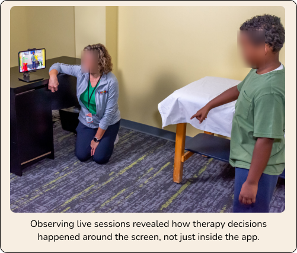

Product Strategy · Product Research · Product Design
ARWell Pro: Designing Therapist-Led AR Therapy
A therapist-facing AR rehabilitation platform redesigned to make session setup clearer, patient management easier, and therapy engagement more clinically focused.

Company-measured post-launch
Project Snapshot
The challenge, workflow insights, and core clinical system alignment.
Problem
ARWell Pro had promising AR gameplay, but the clinical workflow was fragmented. Therapists lacked clear session controls, children dropped off early, and rewards were interrupting therapy time.
The Pivot
Direct child feedback was not enough. Caregivers and teachers saw these children every day in ways researchers could not. Including them gave us behavioral context around focus, frustration, decision-making, and reward timing.
Key Insight
Therapy engagement breaks down when play, clinical intent, and therapist control stop working together.
The Stakes
This was not a consumer app where a bad experience meant someone closed a tab. A failed therapy session could mean 30–45 minutes of recovery time lost.
My Role
End-to-end product ownership across strategy, research, design, and clinical delivery.
Product Strategy & Prioritization
Independently identified therapist workflow friction as the core product problem and translated research findings into priorities across session setup, patient management, game selection, and reward controls.
Research Planning & Synthesis
Independently planned and conducted live session observations, therapist interviews, caregiver and teacher interviews, and usability testing to uncover recurring workflow and engagement patterns.
End-to-End Product Design
Independently owned the redesign of the therapist dashboard, session setup, patient and program management, game library, reward controls, and gameplay progression.
Agile Delivery & Risk Management
Managed delivery through sprint planning, tracked risks and dependencies, coordinated with clinical and technical stakeholders, and adjusted priorities as constraints emerged.
Validation & Clinical Outcomes
Validated the redesigned workflows with therapists and children, connecting product decisions directly to improved engagement, clearer therapist control, and better protection of therapy time.
Where We Started
Original landing screen friction turned setup into a distraction.
ARWell Pro’s original landing screen created friction before therapy even began. Therapists opened the app to unclear weekly goal metrics, unlabeled navigation arrows, buried game selection, and no obvious first action.
Patient management, program setup, session type selection, and reward access were either missing or scattered across the experience. For therapists, setup took attention away from the child. For children, the interface created confusion before the exercise even started.
The issue was not just visual clutter — it was a clinical workflow problem.

Research Approach
Mapping the full clinical ecosystem before touching pixels.
I mapped the full therapy workflow before redesigning the interface. Before opening Figma, I needed to understand what was actually happening during a therapy session: how therapists prepared activities, how children responded to instructions, when attention started to drop, and when rewards helped or interrupted care.
I looked beyond individual screens and studied the full therapy ecosystem — therapist setup, child engagement, instruction clarity, gameplay progression, reward timing, and session control so the redesign could support the reality of a live clinical session, not just the app flow.

Key Findings
Three core behaviors observed in clinical sessions that shaped the redesign.
Therapists were navigating around the app, not through it
Structure game selection and session setup around clinical intent.
What I observed
The original experience did not give therapists a clear path to start or manage a session. They had to interpret unclear goal metrics, click through games one by one, and work around scattered controls before therapy could begin. Game selection was especially slow — therapists could not browse by therapy goal, save curated sets, or quickly choose the right activity for a patient.
Design response & Clinical value
I rebuilt the dashboard and game library around how therapists actually planned sessions. The new flow centered on four clear actions — Start Session, Manage Patients, Manage Programs, and View Data — and reorganized games by therapy goal (Balance, Strength, Coordination, Endurance, Sesame Street). Programs became reusable clinical objects, reducing setup friction so therapists could spend less attention navigating the interface and more supporting the child.

Children quit games that gave them no reason to keep going
Build level progression around theme continuity and clear difficulty scaling.
What I observed
Across multiple games, levels changed visually but did not build in a way children could understand. Themes, objects, and difficulty shifts felt disconnected (switching between Goats, Ducks, Rabbits, Aliens, and Food), so children had little reason to believe the next level would feel different or worth reaching.
Design response & Clinical value
I redesigned progression logic around one coherent space theme where level difficulty increased through movement behavior: object size, speed, motion, and timing (Static planets → Smaller asteroids → Satellites → Rockets in loops → Fast rockets). Making progression understandable and predictable gave children a clearer reason to continue participating and sustained engagement during therapy activities.

The reward store was interrupting therapy time
Give therapists per-patient access toggles and timed reward windows.
What I observed
Children often went straight to the reward store before starting exercises. In a 30–45 minute therapy session, open-ended browsing could take over valuable session time. What was meant to motivate therapy was sometimes replacing therapy.
Design response & Clinical value
I added therapist-controlled reward access so the store could be turned on or off per patient from Access Controls. I also added a 2-minute reward timer, giving children enough time to choose a reward without letting the store take over the session — protecting therapy time while keeping rewards as a motivation tool.

Design Principles
Core takeaways from designing tools for clinical contexts.
Engagement needs structure, not just stimulation
Children respond to play, but therapy requires repeatable, goal-oriented engagement. Rewards and games work best when they are tied to effort, progress, and timing — not novelty alone.
Therapists need control, not clutter
Every extra step in a clinical interface takes attention away from the child. Common actions should be fast, visible, and easy to control during a live session.
Gameplay must serve therapy, not decorate it
Every object, motion pattern, and level should support a therapeutic purpose. If the game is fun but does not support movement practice, it can work against the session.
Research the ecosystem, not just the user
The most important insight came from people outside the primary user group. Caregivers and teachers helped reveal behavioral patterns children could not always explain during therapy.
Reflection
What designing for clinical environments taught me about healthcare UX.
This project gave me deep, repeated exposure to one therapy environment, but I would not treat those findings as universal without broader validation.
The same workflow issues surfaced across many sessions, which made the redesign direction clear. But before scaling, I would want to test the dashboard, programs, reward controls, and game progression with therapists from outpatient clinics, hospital-based programs, and independent practices.
ARWell Pro taught me that designing for healthcare is not about making clinical tools more playful on the surface. It is about understanding the coordination between therapist, child, task, motivation, and outcome — and designing a system where those pieces work together.
“In therapy design, engagement is only valuable when it protects the clinical goal — not when it pulls attention away from it.”
Next Steps
Questions and opportunities I would explore in future iterations.